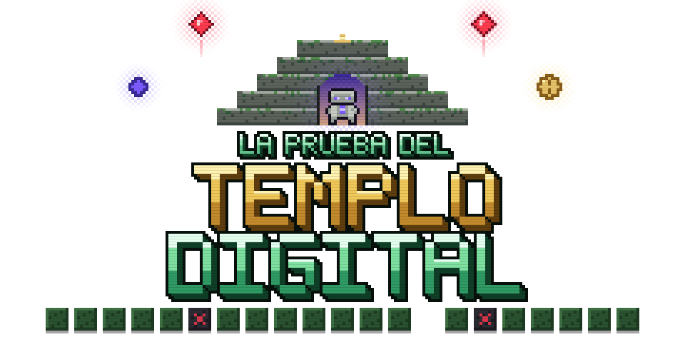

WASD/Flechas mover · Espacio/Shift dash (orbe Dash) · R reiniciar · M sonido
La Prueba del Templo Digital

Lumen es un pequeño golem que es parte de una mazmorra y es el próximo candidato a convertirse en Guardián de la mazmorra.
Ayuda a Lumen a superar las pruebas del Guardián y conviértelo en el próximo Guardián.
Cargando modelos…
Pruebas superadas · elige una sala
WASD / Flechas mover · Espacio / Shift dash (solo con cargas de orbe Dash, máx. 2) Las baldosas rojas caen al abismo · el escudo es pasivo · 3 vidas · Esc pausa.